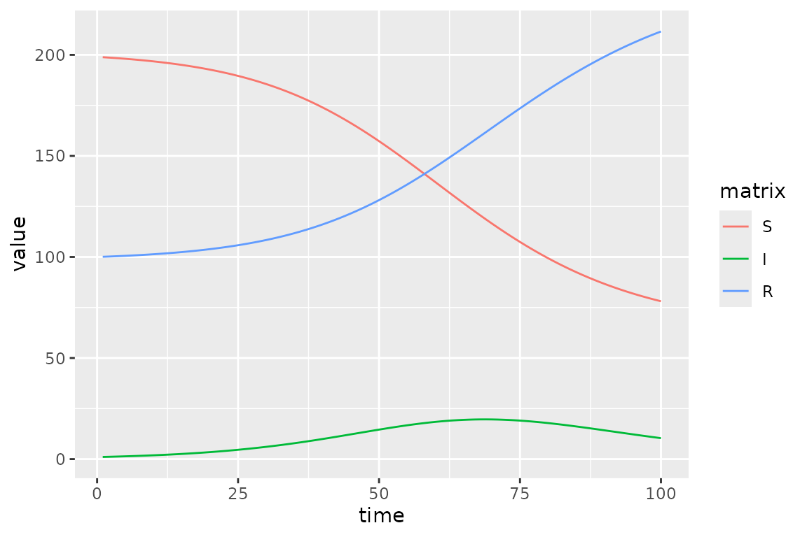
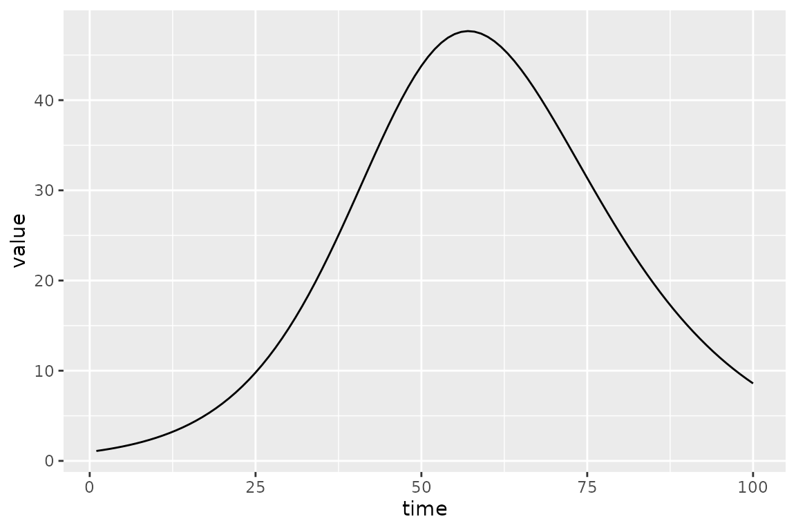

library(macpan2)
library(ggplot2)
library(dplyr)
library(broom.mixed)
options(macpan2_verbose = FALSE)Before reading this article on calibrating models to data, please first look at the quickstart guide and the article on the model library.
Hello World
We’ll do the first thing you should always do when trying out a new fitting procedure: simulate clean, nice data from the model and see if you can recover something close to the true parameters.
Step 0: set up simulator and generate ‘data’
We will be using several different versions of the SIR model, all of which can be derived from the SIR specification in the model library.
sir_spec = mp_tmb_library("starter_models"
, "sir"
, package = "macpan2"
)
print(sir_spec)
#> ---------------------
#> Default values:
#> ---------------------
#> matrix row col value
#> beta 0.2
#> gamma 0.1
#> N 100.0
#> I 1.0
#> R 0.0
#>
#> ---------------------
#> Before the simulation loop (t = 0):
#> ---------------------
#> 1: S ~ N - I - R
#>
#> ---------------------
#> At every iteration of the simulation loop (t = 1 to T):
#> ---------------------
#> 1: infection ~ S * I * beta/N
#> 2: recovery ~ gamma * I
#> 3: S ~ S - infection
#> 4: I ~ I + infection - recovery
#> 5: R ~ R + recoveryFrom this specification we derive our first version of the model, which we use to generate synthetic data to see if optimization can recover the parameters that we use when simulating.
sir_simulator = mp_simulator(sir_spec
, time_steps = 100
, outputs = c("S", "I", "R")
, default = list(N = 300, R = 100, beta = 0.25, gamma = 0.1)
)
sir_results = mp_trajectory(sir_simulator)
(sir_results
|> ggplot(aes(time, value, colour = matrix))
+ geom_line()
)
Note that we changed the default values so that we can try to recover them using optimization below.
To make things a little more challenging we add some Poisson noise to
the prevalence (I) value:
set.seed(101)
sir_prevalence = (sir_results
|> dplyr::select(-c(row, col))
|> filter(matrix == "I")
|> rename(true_value = value)
|> mutate(value = rpois(n(), true_value))
)
plot_truth <- ggplot(sir_prevalence, aes(time)) +
geom_point(aes(y = value)) +
geom_line(aes(y = true_value))
print(plot_truth)Step 1: add calibration information
The next step is to produce an object that can be calibrated through
optimization. To make this model we need to specify what trajectory we
will fit to (I in this case). We also need to specify what
parameters we will fit. Any value in the default list of a
model spec can be selected for fitting. Note that here we only change
the default value of N, and leave the other parameters
where they were in the model spec. It is this difference between the
defaults in the simulator versus the calibrator that will will hope to
recover using optimization.
sir_calibrator = mp_tmb_calibrator(sir_spec
, data = sir_prevalence
, traj = "I"
, par = c("beta", "R")
, default = list(N = 300)
)
print(sir_calibrator)
#> ---------------------
#> Before the simulation loop (t = 0):
#> ---------------------
#> 1: S ~ N - I - R
#>
#> ---------------------
#> At every iteration of the simulation loop (t = 1 to T):
#> ---------------------
#> 1: infection ~ S * I * beta/N
#> 2: recovery ~ gamma * I
#> 3: S ~ S - infection
#> 4: I ~ I + infection - recovery
#> 5: R ~ R + recovery
#>
#> ---------------------
#> After the simulation loop (t = T + 1):
#> ---------------------
#> 1: sim_I ~ rbind_time(I, obs_times_I)
#>
#> ---------------------
#> Objective function:
#> ---------------------
#> ~-sum(dpois(obs_I, clamp(sim_I)))Note that the calibrator has a few new expressions that deal with comparisons with data. In particular it is the objective function that we will optimize. But before that we can do a sanity check to make sure that the default values give a reasonable-looking trajectory.
(sir_calibrator
|> mp_trajectory()
|> ggplot(aes(time, value))
+ geom_line()
)
Step 2: do the fit
Doing the fit is straightforward.
mp_optimize(sir_calibrator)Note that the mp_optimize function has modified the
sir_calibrator object, which now contains the new fitted
parameter values and the results of the optimization.
Step 3: check the fit
We can print the results of the optimizer (nlminb in
this case) using the mp_optimizer_output function.
Always check the value of the convergence code (if it’s
not 0, then something may have gone wrong …).
mp_optimizer_output(sir_calibrator)
#> $par
#> params params
#> 0.2287659 82.9613444
#>
#> $objective
#> [1] 248.5813
#>
#> $convergence
#> [1] 0
#>
#> $iterations
#> [1] 12
#>
#> $evaluations
#> function gradient
#> 23 12
#>
#> $message
#> [1] "relative convergence (4)"
mp_optimize(sir_calibrator)
#> $par
#> params params
#> 0.2287659 82.9613444
#>
#> $objective
#> [1] 248.5813
#>
#> $convergence
#> [1] 0
#>
#> $iterations
#> [1] 12
#>
#> $evaluations
#> function gradient
#> 23 12
#>
#> $message
#> [1] "relative convergence (4)"
mp_optimizer_output(sir_calibrator, what="all")
#> [[1]]
#> [[1]]$par
#> params params
#> 0.2287659 82.9613444
#>
#> [[1]]$objective
#> [1] 248.5813
#>
#> [[1]]$convergence
#> [1] 0
#>
#> [[1]]$iterations
#> [1] 12
#>
#> [[1]]$evaluations
#> function gradient
#> 23 12
#>
#> [[1]]$message
#> [1] "relative convergence (4)"
#>
#>
#> [[2]]
#> [[2]]$par
#> params params
#> 0.2287659 82.9613444
#>
#> [[2]]$objective
#> [1] 248.5813
#>
#> [[2]]$convergence
#> [1] 0
#>
#> [[2]]$iterations
#> [1] 12
#>
#> [[2]]$evaluations
#> function gradient
#> 23 12
#>
#> [[2]]$message
#> [1] "relative convergence (4)"As mentioned above, the best-fit parameters are stored internally,
and we can get information about them using the mp_tmb_coef
function. (Note that if you get a message about the
broom.mixed package, please install it.
mp_tmb_coef is a wrapper for this function).
sir_estimates = mp_tmb_coef(sir_calibrator, conf.int = TRUE)
print(sir_estimates)
#> term mat row col default type estimate std.error conf.low
#> 1 params beta 0 0 0.2 fixed 0.2287659 0.008597557 0.211915
#> 2 params.1 R 0 0 0.0 fixed 82.9613444 7.214429832 68.821322
#> conf.high
#> 1 0.2456168
#> 2 97.1013670These correspond pretty well to the known true values of the simulation model.
mp_default(sir_simulator) |> filter(matrix %in% sir_estimates$mat)
#> matrix row col value
#> 1 R 100.00
#> 2 beta 0.25And the known simulated true value of the trajectory (black line) does in fact fall within the 95% confidence region (red ribbon).
sim_vals <- (sir_calibrator
|> mp_trajectory_sd(conf.int = TRUE)
|> filter(matrix == "I")
)
(plot_truth
+ geom_line(data = sim_vals
, aes(y = value)
, colour = "red"
)
+ geom_ribbon(data = sim_vals
, aes(ymin = conf.low, ymax = conf.high)
, fill = "red"
, alpha = 0.2
)
)
Statistical Model
Above we were not specific about the statistical model used to fit the data. Here we describe it.
Let the observed and simulated trajectories be vectors \(I_\textrm{obs}\) and \(I_\textrm{sim}\). The \(I\) symbol is chosen because we fitted to
prevalence above, but it could be any trajectory in the model. For
example, traj = "infection" would have fitted to incidence,
because the infection variable in the model is the number
of new cases at every time step.
The simulated trajectories are actually a function of the vector, \(\mathbf b\), of default values that we chose to make statistical parameters. Therefore, we write the simulated trajectory as a function, \(I_\textrm{sim}(\mathbf b)\).
We assume that the observed trajectory is Poisson distributed with mean given by the simulated trajectory.
\[ I_{\textrm{obs}} \sim \textrm{Poisson}(I_\textrm{sim}(\mathbf b)) \]
Given these assumptions we choose \(\mathbf
b\) to maximize the resulting likelihood function, and use
functionality from the TMB package (and sometimes the
tmbstan/rstan packages) to do statistical
inference on the fitted parameters and trajectories.
We recognize that this statistical model will often be overly
restrictive. The macpan2 package has a developer interface
that is much more flexible, allowing for more detailed control over
TMB, tmbstan, and rstan. This
interface allows for arbitrary likelihood functions, prior
distributions, parameter transformations, flexible parameter
time-variation models, random effects and more. See here
and here
for more information, although because these guides describe a developer
interface the instructions may be unclear to some or many readers. Our
plan is to continue adding interface layers, such as the interface
described in this vignette, so that more of macpan2 can be
exposed to users.